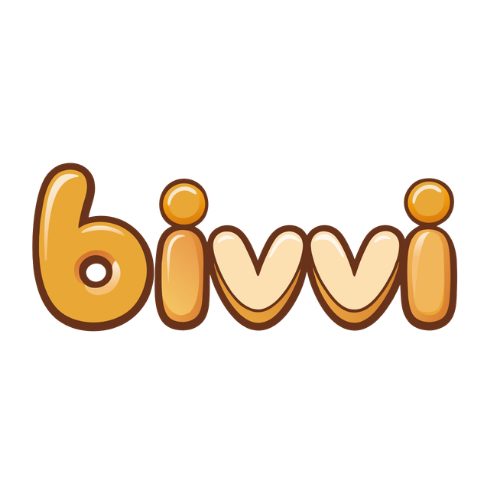

Bivvi
A shared reading app for grandparents and grandchildren who live far apart. A video call gives them a screen. Bivvi gives them something to do together.
Design Note
Design around a shared moment, not a video call.
Video calling already exists. The challenge was keeping a grandparent and a four-year-old engaged with each other across distance, and a conversation rarely does that. A book does.
So the product protects the reading. Parents manage the account and content. Grandparents join through an email magic link, and in many sessions the only thing they touch is the arrow that turns the page.
That came from my own family. Every minute spent on a blurred camera filter or a FaceTime hiccup was a minute the kids drifted away. The goal wasn't a better video call. It was making grandparents feel like they were sitting next to their grandchildren with a book.